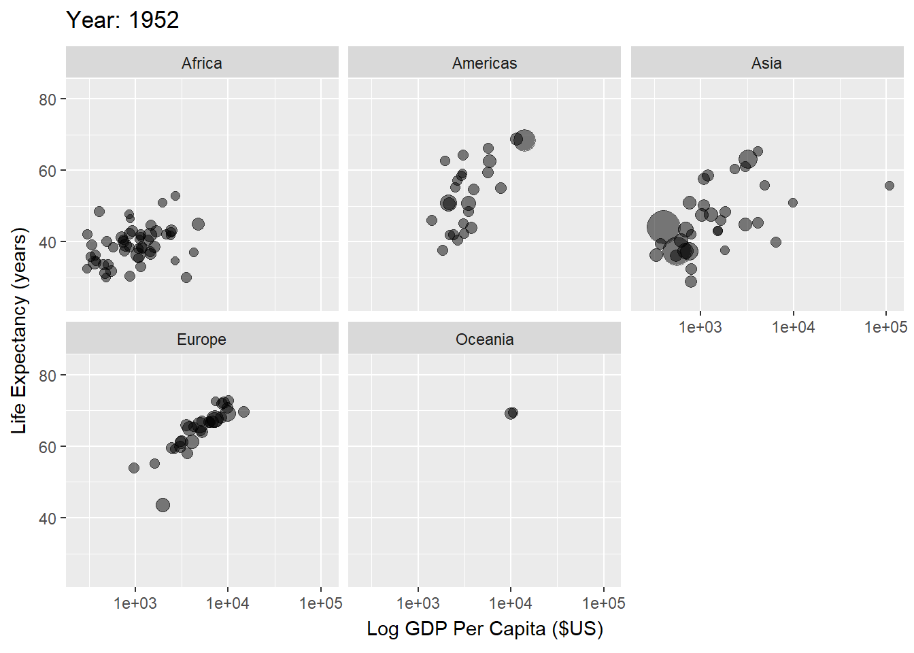

Economics of Health Care
Welcome
Health care is one of the largest and most complex sectors of the U.S. economy. Understanding it requires economics: how resources are allocated, how incentives shape the behavior of patients, providers, insurers, and policymakers, and how these choices affect health and spending.
This book introduces the core ideas of health economics, focusing specifically on issues related to the delivery of health care (sometimes referred to as “supply-side” health economics). We will study health insurance and financing, physician behavior and incentives, hospital and physician pricing, and prescription drug markets. Each topic is motivated by theoretical models and paired with policy applications and data. The material is aimed at advanced students with prior training in microeconomics.
Two boundaries are worth noting. First, this book is intentionally U.S.-centric. I draw on international comparisons only for context, and those interested in detailed cross-country analysis should consult the Peterson-KFF Health System Tracker and the Commonwealth Fund, among many other excellent resources. Second, I do not cover health care labor markets such as nurse wages or physician specialty choice, important though they are.
By the end of this book, you should be able to:
- Explain the structure and history of the U.S. health care system.
- Model adverse selection in health insurance and connect theory to data.
- Analyze physician incentives using agency models and empirical evidence.
- Describe how hospital pricing and insurer negotiations work, and distinguish between charges and prices.
- Use hospital data to assess the effects of real-world policies.
Health Improvements
Since 1950, global life expectancy has risen dramatically, driven by poverty reduction, public health advances, and wider access to basic care. People live longer, healthier lives, with fewer deaths from infectious disease and better quality of life overall (Figure 1).
Health and Wealth
These health gains have moved hand-in-hand with economic growth. Higher incomes allow countries to invest in food, clean water, shelter, and medical care, all of which extend life expectancy (Figure 2).

This relationship between wealth and health is even more evident when we look over time by country, as demonstrated in Figure 3. This makes sense if we think of ways to improve very low life expectancy (e.g., life expectancy cut due to lack of basic necessities like food, shelter, clean water, basic medicine, etc.).

Yet this relationship weakens once countries reach higher levels of health. For example, among the G7, U.S. life expectancy has stagnated even as U.S. GDP per capita has outpaced peers (Figure 4).

Health Care Spending and Outcomes
If income is not the whole story, perhaps health care spending is. The U.S. spends far more on health care than peer nations, yet performs worse on outcomes such as infant and maternal mortality (Figure 5). Since the mid-1980s, U.S. health spending has accelerated while these outcomes have worsened.

Unfortunately, infant and maternal mortality are not the only measures by which the U.S. health care system appears to be underperforming. Commonwealth’s 2019 report on health care systems around the world (i.e., pre-Covid) highlights significant gaps in health outcomes, access, and affordability in the U.S. compared to other countries. Specifically, the U.S. ranks last among the 11 high-income countries analyzed in terms of health outcomes, with higher rates of mortality and morbidity from chronic diseases, such as heart disease, diabetes, and cancer. Additionally, the U.S. has the highest rate of mortality amenable to health care, suggesting that the health care system is not functioning optimally. The report also finds that the U.S. has the highest rate of adults who go without needed health care due to cost, with one-third of adults reporting cost-related access problems.
Still, the U.S. excels in certain areas: cancer survival, treatment of cardiovascular disease, and medical innovation. Our system is capable of world-leading care, but it delivers it unevenly. The coexistence of excellence and underperformance reflects deep inequities in access and use of care.
Why Study the Economics of Health Care?
Economics helps explain this paradox. Health care markets differ from textbook markets because of asymmetric information (patients and insurers, patients and physicians), unpredictable need, and heterogeneous products. These features create inefficiencies, raise costs, and complicate policy design.
Why is the U.S. so Different?
These problems are magnified in the U.S. because of its market-based and fragmented system. Patients face dozens of insurance options; providers range from hospitals to surgery centers to urgent care clinics; each negotiates and bills separately. Fragmentation drives up costs and undermines coordination, especially for chronic illness.
The result is a system that spends more, delivers uneven outcomes, and leaves access gaps that other high-income countries have solved more effectively. Understanding the economics behind these failures—and the successes—provides the foundation for designing better policies.